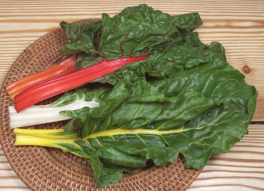

Chard / Swiss Chard

[Silverbeet, Spinach Beet; Beta vulgaris var. cicla]
This is a variety of beet greens developed for edible leaves, and is a
vegetable deserving of wider appreciation. It is available in several
colors, some of which are shown in the photo, but red and white are
most common in markets. Leaves are cooked similar to spinach and the
stems similar to asparagus. The photo specimens were about 15 inches
long, but they can exceed 18 inches. There are varieties with thinner,
more tender stems, but those marketed in North America are uniformly
of the wide stemmed varieties.
Although never much grown in Switzerland, these greens were called
"Swiss Chard" after a Swiss botanist, to differentiate them from
Cardoons, which were also called "Chard". Cardoons are no longer
called Chard so the "Swiss" part is now redundant.
More on Amaranths.
Chard is much used in Mediterranean cuisines, particularly those of
Spain and Morocco. Some Spanish consider it to be over-used, thus the
popular saying, "Chard at midday, and for supper too - are we worthy,
Jesus, of so much chard?"
Buying:
Practically every supermarket and farmer's
market in North America has chard these days. The red stemmed is fine
for a chard side dish and for some recipes, but the white stemmed is
better for more complex recipes because it won't stain the other
ingredients.
Storing:
If fresh, it will keep, loosely bagged in
plastic, maybe 4 days in the fridge. Any sign if yellowing means it's
past its prime.
Cooking:
Don't overcook. Just a few minutes is enough
for leaves, just a couple minutes more for stems.
Leaves / Stems:
Some recipes call for both leaf and
stem, but many recipes call for just leaf, with the stems removed. Yield
of leaf against stem is about 60% / 40%, which would be a waste if
you don't use the stems. Fortunately the stems are usable alone. In
Spain they are used in midday stews, the leaves being used in omelets
and the like in the evening. In Lebanon they are often served as a salad
with Tahini Dressing, and in Turkey with Yogurt Sauce. The Turks also
pickle the stems. Stuffed Chard Leaves are popular in both those
countries, so they have a lot of stems left over.
Health & Nutrition:
Chard is highly
nutritious, high in vitamins A, K, and C, and rich in minerals, dietary
fiber, and protein. Leaves and stems contain oxalic acid, but at a
concentration much lower than in spinach.
ch_chardz 141129 - www.clovegarden.com
©Andrew Grygus - agryg@clovegarden.com - Photos on this
page not otherwise credited are © cg1 -
Linking to and non-commercial use of this page permitted